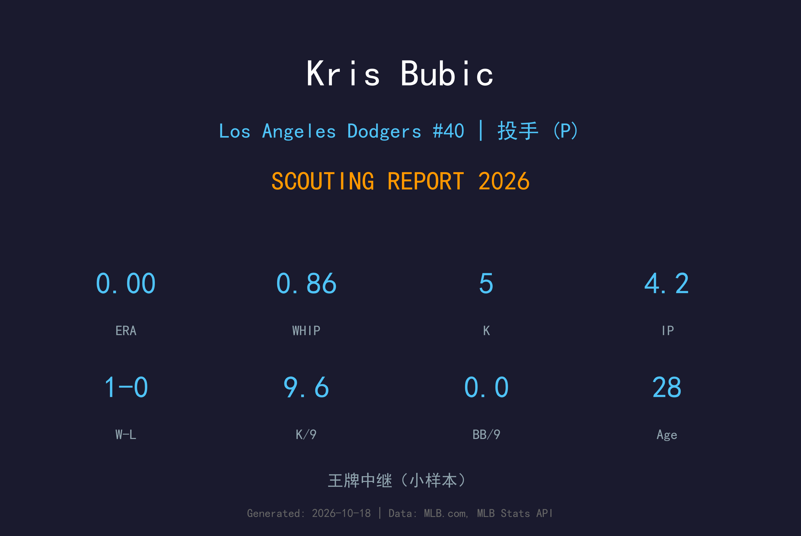
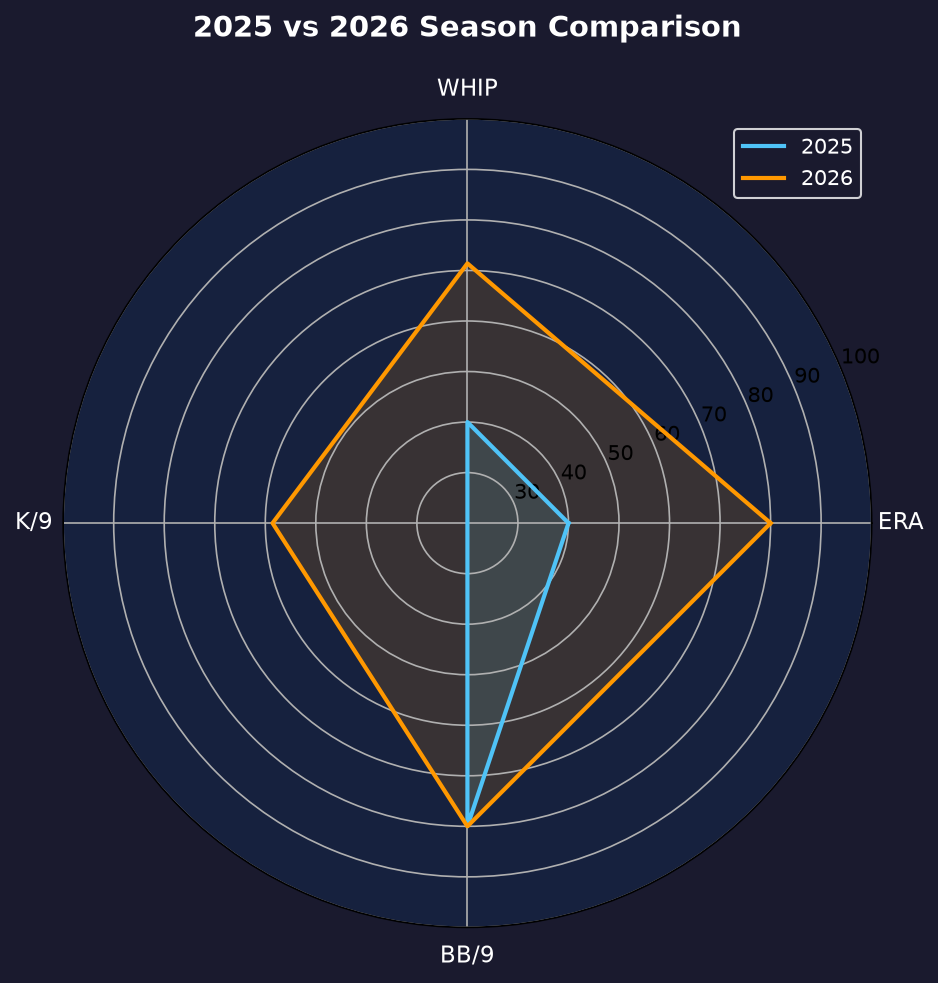
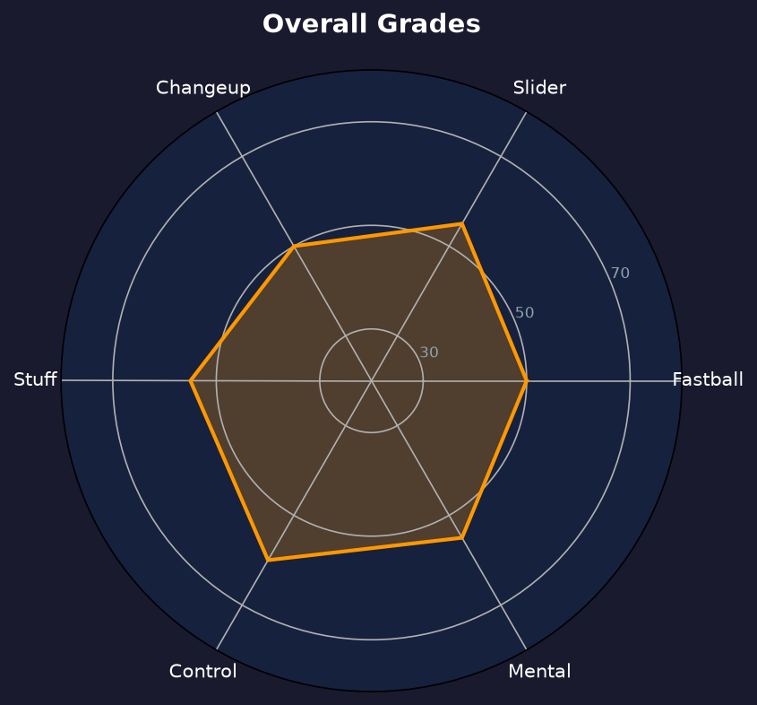

Los Angeles Dodgers #50 | 后援投手 | 左投 / 左打 | 斯坦福左投

Kris Bubic 是从 Stanford 毕业的左投，经历过 Tommy John 手术的全明星反弹者。2026年8月3日，道奇从皇家交易得到这位左投，为季后赛左投牛棚补上深度。
道奇时期他仅出赛5场，但交出 0.00 ERA、0.86 WHIP、4.2局5次三振0保送、2次 hold 的完美成绩。他是典型的"低登场、高效率"型后援，在有限机会里证明了自己的价值。
28岁的 Bubic 正处于生涯的成熟期。2027年他的目标是从季后赛边缘后援，升级为道奇牛棚里值得信赖的常规武器。
8胜1败、2.62 ERA、101K，帮助球队夺得 Pac-12 冠军，获 Golden Spikes Award 季中观察提名。
2023年 TJ 手术、2024年牛棚复健成功、2025年全明星反弹，成为皇家轮值复兴希望。
交易截止日翌日加盟，5场 0.00 ERA、2 hold，为季后赛左投深度提供保险。
⚠️ 小样本警告：仅 4.2 局，数据仅供参考。

Bubic 2026年上半年效力于堪萨斯城皇家（左肘问题仅出赛少数场次），8月3日被交易至道奇，背号改穿 #50。本页图表由脚本根据最终数据自动生成。
道奇交易 Bubic 的初衷是为季后赛准备左投后援深度——面对对手左打-heavy 的打线时，需要一个能吃一局的好球左投。Bubic 用 5 场 0 失分、2 hold 回应了这份期待，并在季后赛名单中占据一席之地。
主战球种，占全部配球的 41.4%，均速 91.9 mph。直上直下的四缝线速球，负责抢好球数与建立球数领先，是所有配球的基准。
常用武器，占全部配球的 20.5%，均速 85.9 mph。变速球靠与速球的速差取命，主要用来对付反侧打者。
常用武器，占全部配球的 16.8%，均速 82.5 mph。横扫滑球比传统滑球横向位移更大，球路横扫进垒，对同侧打者威胁极大。
辅助配球，占全部配球的 12.8%，均速 91.4 mph。伸卡球下沉明显，主要用于制造滚地球、压低长打率。
辅助配球，占全部配球的 8.5%，均速 85.4 mph。传统滑球横向位移锐利，是两好球后的主要挥空武器。
4.2局0保送在小样本下更显珍贵——它暗示 Bubic 的 mechanical 已经从上一次 TJ 手术中完全恢复，控球没有留下后遗症。对于一名左投后援，"不送保送"是最有价值的能力。
季后赛2场1.1局、13.50 ERA、3.75 WHIP，与常规赛的完美形成刺眼对比。小样本下不应对他过度苛责，但这提醒他：季后赛的强度需要更快的 adjustment。
从皇家的伤病疑云到道奇的季后赛名单，Bubic 的2026年完成了一个励志的转折。他的 0.00 ERA 是道奇交易截止日操作中性价比最高的收获之一。

控球型左投后援，季后赛强度的调整是课题
B 级 / 功能性左投
道奇 2026 季后赛战绩：NLDS 3-1 晋级、NLCS 0-4 止步。
| G | IP | ERA | WHIP | SO | BB | H | HR |
|---|---|---|---|---|---|---|---|
| 2 | 1.1 | 13.50 | 3.75 | 2 | 2 | 3 | 1 |
Kris Bubic 的2027赛季目标是成为道奇牛棚的常规武器，而不是季后赛边缘人。他的左投身份与控球能力，让他有机会在 Vesia 之外成为第二个左投选择。
2026：皇家伤病疑云 → 8/3交易至道奇 → 5场 0.00 ERA → 季后赛名单
2027：目标 40+ 场、ERA 3.50 以下、稳固牛棚位置
2028+：若控球持续稳定，可发展为高价值 setup man
Kristofer Bubic 出生于加州库比蒂诺，毕业于 Archbishop Mitty High School，2015年进入 Stanford University。2018年大三赛季以8胜1败、2.62 ERA、101次三振帮助 Stanford 夺得 Pac-12 冠军，并获 Golden Spikes Award 季中观察名单提名。
2018年选秀，皇家在竞争平衡 A 轮第40顺位选中他。2020年7月31日，Bubic 对 White Sox 完成大联盟首秀，成为皇家史上自2012年 Will Smith 以来最年轻以先发身份登板的左投。2021年他完整先发20场，2022年陷入低潮（5.58 ERA），2023年仅3场先发后因 Tommy John 手术报销。
经过2024年的牛棚复健与2025年的全明星反弹，Bubic 一度被视为皇家轮值复兴希望。但2026年左肘问题再起，最终在8月3日被交易至道奇。场外的他以学术背景与冷静著称，队友们称他"斯坦福的大脑，牛棚的心脏"。